Note
Click here to download the full example code or to run this example in your browser via Binder
Manifold learning on handwritten digits: Locally Linear Embedding, Isomap…¶
We illustrate various embedding techniques on the digits dataset.
# Authors: Fabian Pedregosa <fabian.pedregosa@inria.fr>
# Olivier Grisel <olivier.grisel@ensta.org>
# Mathieu Blondel <mathieu@mblondel.org>
# Gael Varoquaux
# Guillaume Lemaitre <g.lemaitre58@gmail.com>
# License: BSD 3 clause (C) INRIA 2011
Load digits dataset¶
We will load the digits dataset and only use six first of the ten available classes.
from sklearn.datasets import load_digits
digits = load_digits(n_class=6)
X, y = digits.data, digits.target
n_samples, n_features = X.shape
n_neighbors = 30
We can plot the first hundred digits from this data set.
import matplotlib.pyplot as plt
fig, axs = plt.subplots(nrows=10, ncols=10, figsize=(6, 6))
for idx, ax in enumerate(axs.ravel()):
ax.imshow(X[idx].reshape((8, 8)), cmap=plt.cm.binary)
ax.axis("off")
_ = fig.suptitle("A selection from the 64-dimensional digits dataset", fontsize=16)
Helper function to plot embedding¶
Below, we will use different techniques to embed the digits dataset. We will plot the projection of the original data onto each embedding. It will allow us to check whether or digits are grouped together in the embedding space, or scattered across it.
import numpy as np
from matplotlib import offsetbox
from sklearn.preprocessing import MinMaxScaler
def plot_embedding(X, title):
_, ax = plt.subplots()
X = MinMaxScaler().fit_transform(X)
for digit in digits.target_names:
ax.scatter(
*X[y == digit].T,
marker=f"${digit}$",
s=60,
color=plt.cm.Dark2(digit),
alpha=0.425,
zorder=2,
)
shown_images = np.array([[1.0, 1.0]]) # just something big
for i in range(X.shape[0]):
# plot every digit on the embedding
# show an annotation box for a group of digits
dist = np.sum((X[i] - shown_images) ** 2, 1)
if np.min(dist) < 4e-3:
# don't show points that are too close
continue
shown_images = np.concatenate([shown_images, [X[i]]], axis=0)
imagebox = offsetbox.AnnotationBbox(
offsetbox.OffsetImage(digits.images[i], cmap=plt.cm.gray_r), X[i]
)
imagebox.set(zorder=1)
ax.add_artist(imagebox)
ax.set_title(title)
ax.axis("off")
Embedding techniques comparison¶
Below, we compare different techniques. However, there are a couple of things to note:
the
RandomTreesEmbeddingis not technically a manifold embedding method, as it learn a high-dimensional representation on which we apply a dimensionality reduction method. However, it is often useful to cast a dataset into a representation in which the classes are linearly-separable.the
LinearDiscriminantAnalysisand theNeighborhoodComponentsAnalysis, are supervised dimensionality reduction method, i.e. they make use of the provided labels, contrary to other methods.the
TSNEis initialized with the embedding that is generated by PCA in this example. It ensures global stability of the embedding, i.e., the embedding does not depend on random initialization.
from sklearn.decomposition import TruncatedSVD
from sklearn.discriminant_analysis import LinearDiscriminantAnalysis
from sklearn.ensemble import RandomTreesEmbedding
from sklearn.manifold import (
Isomap,
LocallyLinearEmbedding,
MDS,
SpectralEmbedding,
TSNE,
)
from sklearn.neighbors import NeighborhoodComponentsAnalysis
from sklearn.pipeline import make_pipeline
from sklearn.random_projection import SparseRandomProjection
embeddings = {
"Random projection embedding": SparseRandomProjection(
n_components=2, random_state=42
),
"Truncated SVD embedding": TruncatedSVD(n_components=2),
"Linear Discriminant Analysis embedding": LinearDiscriminantAnalysis(
n_components=2
),
"Isomap embedding": Isomap(n_neighbors=n_neighbors, n_components=2),
"Standard LLE embedding": LocallyLinearEmbedding(
n_neighbors=n_neighbors, n_components=2, method="standard"
),
"Modified LLE embedding": LocallyLinearEmbedding(
n_neighbors=n_neighbors, n_components=2, method="modified"
),
"Hessian LLE embedding": LocallyLinearEmbedding(
n_neighbors=n_neighbors, n_components=2, method="hessian"
),
"LTSA LLE embedding": LocallyLinearEmbedding(
n_neighbors=n_neighbors, n_components=2, method="ltsa"
),
"MDS embedding": MDS(
n_components=2, n_init=1, max_iter=120, n_jobs=2, normalized_stress="auto"
),
"Random Trees embedding": make_pipeline(
RandomTreesEmbedding(n_estimators=200, max_depth=5, random_state=0),
TruncatedSVD(n_components=2),
),
"Spectral embedding": SpectralEmbedding(
n_components=2, random_state=0, eigen_solver="arpack"
),
"t-SNE embeedding": TSNE(
n_components=2,
n_iter=500,
n_iter_without_progress=150,
n_jobs=2,
random_state=0,
),
"NCA embedding": NeighborhoodComponentsAnalysis(
n_components=2, init="pca", random_state=0
),
}
Once we declared all the methodes of interest, we can run and perform the projection of the original data. We will store the projected data as well as the computational time needed to perform each projection.
from time import time
projections, timing = {}, {}
for name, transformer in embeddings.items():
if name.startswith("Linear Discriminant Analysis"):
data = X.copy()
data.flat[:: X.shape[1] + 1] += 0.01 # Make X invertible
else:
data = X
print(f"Computing {name}...")
start_time = time()
projections[name] = transformer.fit_transform(data, y)
timing[name] = time() - start_time
Computing Random projection embedding...
Computing Truncated SVD embedding...
Computing Linear Discriminant Analysis embedding...
Computing Isomap embedding...
Computing Standard LLE embedding...
Computing Modified LLE embedding...
Computing Hessian LLE embedding...
Computing LTSA LLE embedding...
Computing MDS embedding...
Computing Random Trees embedding...
Computing Spectral embedding...
Computing t-SNE embeedding...
Computing NCA embedding...
Finally, we can plot the resulting projection given by each method.
for name in timing:
title = f"{name} (time {timing[name]:.3f}s)"
plot_embedding(projections[name], title)
plt.show()
- 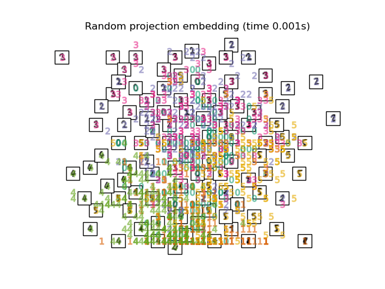
- 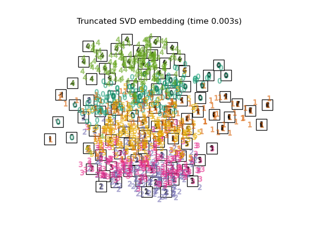
- 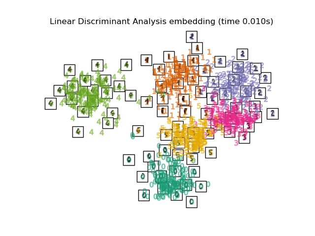
- 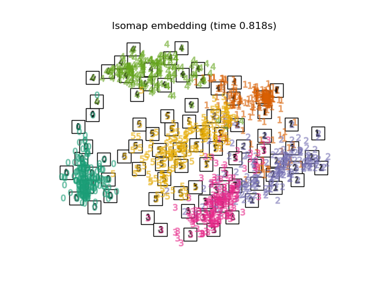
- 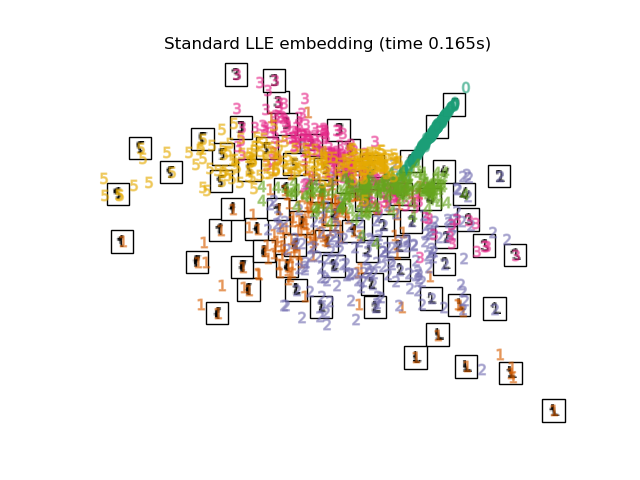
- 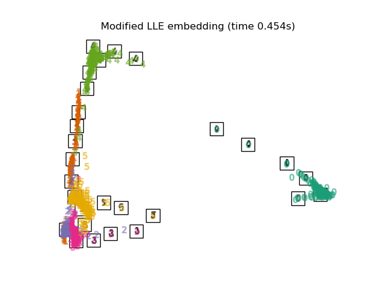
- 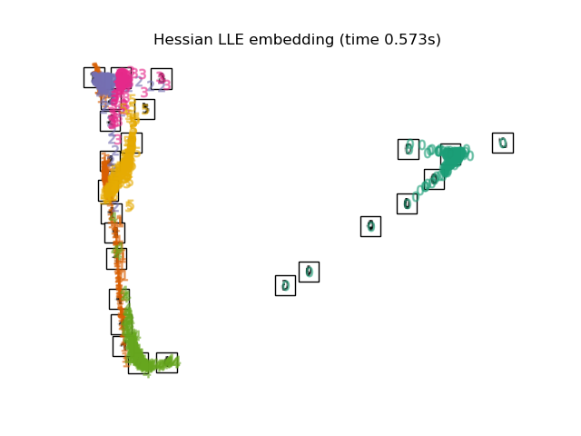

- 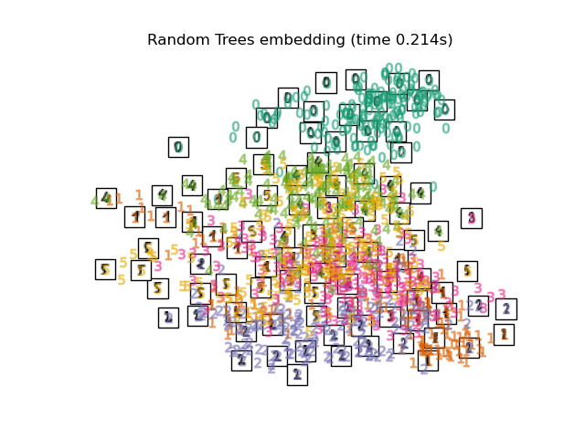
- 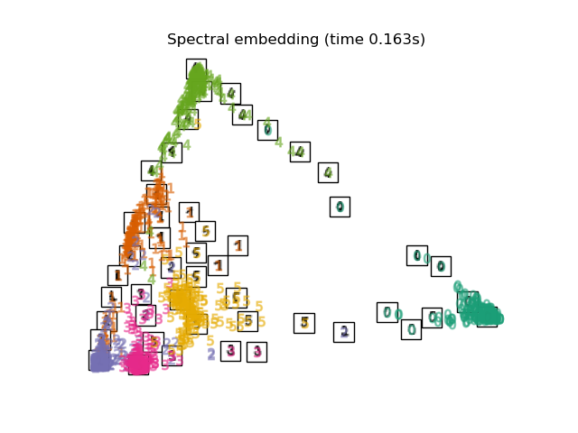
- 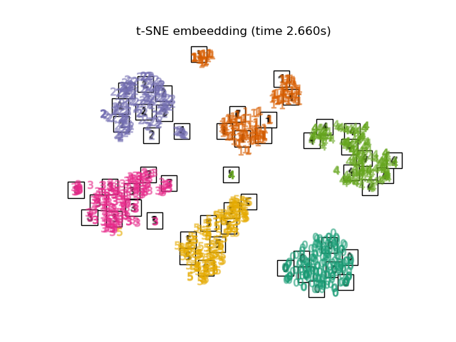
- 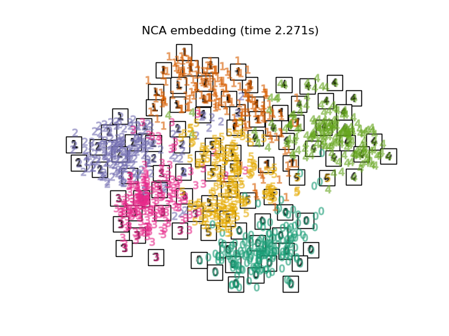
Total running time of the script: ( 0 minutes 14.627 seconds)